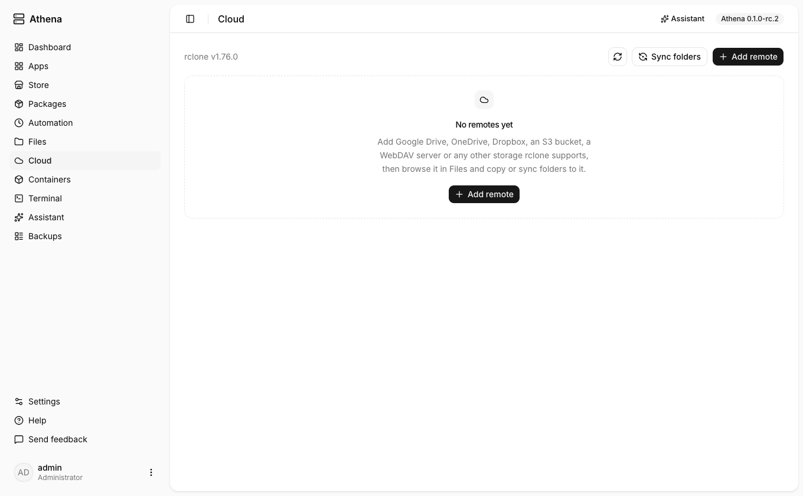

Cloud storage

Athena connects to Google Drive, OneDrive, Dropbox, S3, WebDAV servers and many more through rclone. The Cloud page appears when rclone is available.
Add a remote
- Click Add remote and pick the provider.
- Answer the questions. Secrets are stored encrypted and never shown again.
- For providers that sign in through a browser (Google Drive, OneDrive, Dropbox), Athena shows a command to run on *your own computer*:
rclone authorize "<provider>". Sign in there, and paste the token it prints back into Athena. This is needed because the browser sign-in can't redirect to a server you reach over the network.
Cancelling halfway removes the half-made remote.
Use it
- Browse and manage the remote in Files, like a local folder.
- Sync folders copies or syncs a folder between this server and a remote, with progress.
- Remotes can be a destination for backups.
Athena keeps its own rclone configuration inside its data folder; your own rclone.conf is never read or changed.